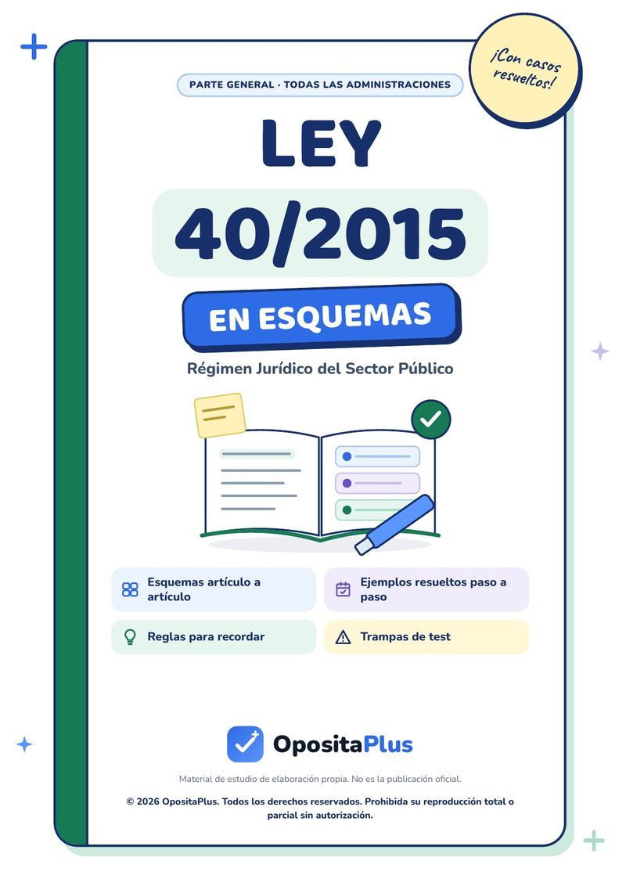
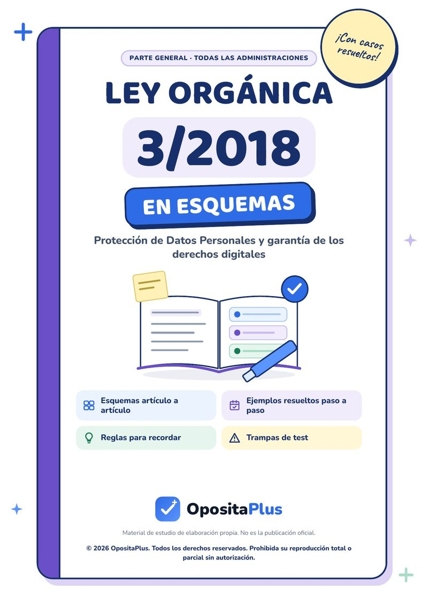
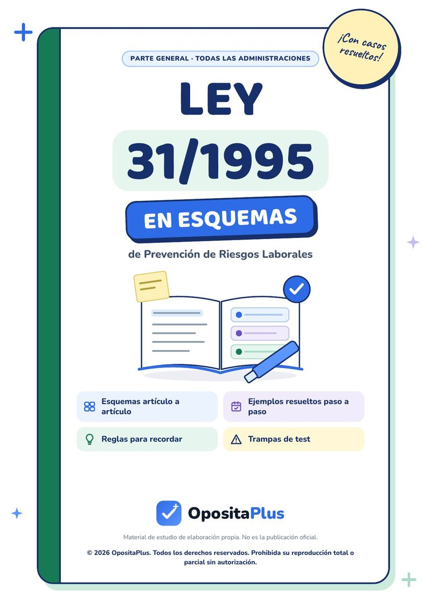

Test de oposiciones de Trabajo Social del SMS (Murcia)
Tests de la oposición de Trabajo Social del Servicio Murciano de Salud (SMS), con todo su programa en la app de tests de oposiciones de la Región de Murcia: 53 temas y 5.260 preguntas con corrección razonada, la teoría de cada tema detrás de cada fallo y simulacros cronometrados.
Empezar gratis en iPhone o Android Hacer un test de muestraDe dónde sale este temario
- Administración convocante
- Servicio Murciano de Salud
- Cuerpo o categoría
- Trabajo Social
- Convocatoria
- Resolución del Director Gerente del Servicio Murciano de Salud de 29 de octubre de 2022
- Publicación
- BORM nº 258, de 8 de noviembre de 2022, anuncio 5636
- Programa
- Ver el programa oficial (PDF)
- Revisado el
- 18 de noviembre de 2026
Test de Trabajo Social: 10 preguntas de muestra
Estas son preguntas reales del primer test del tema 1, el mismo que tienes gratis en la app. Pulsa la opción que creas correcta y verás al momento si aciertas y por qué.
-
Tema 1. Constitución, Estatuto de Murcia y Unión Europea
1. Un ciudadano entiende vulnerada su objeción de conciencia al servicio militar. ¿Puede acudir en amparo al Tribunal Constitucional?
Ver la respuesta
Respuesta correcta: D) Sí, porque el art. 53.2 extiende el amparo al art. 30
El art. 30 pertenece a la Sección 2.ª del Capítulo II, pero el último inciso del art. 53.2 le extiende expresamente el recurso de amparo.
Constitución Española, art. 53.2
-
Tema 1. Constitución, Estatuto de Murcia y Unión Europea
2. Declarado el estado de excepción, ¿cuál de estas garantías del art. 17 CE NO puede suspenderse?
Ver la respuesta
Respuesta correcta: C) Los derechos del detenido del art. 17.3
El art. 55.1 exceptúa expresamente el apartado 3 del art. 17 en el estado de excepción: información de derechos, no declarar y asistencia de abogado.
Constitución Española, art. 55.1
-
Tema 1. Constitución, Estatuto de Murcia y Unión Europea
3. La garantía del contenido esencial del art. 53.1 CE vincula al legislador cuando regula:
Ver la respuesta
Respuesta correcta: C) Los derechos y libertades del Capítulo II
El art. 53.1 se refiere al Capítulo segundo entero (arts. 14 a 38), cuyo ejercicio solo puede regularse por ley que respete su contenido esencial.
Constitución Española, art. 53.1
-
Tema 1. Constitución, Estatuto de Murcia y Unión Europea
4. El art. 43.3 CE encomienda a los poderes públicos fomentar, junto a la educación sanitaria:
Ver la respuesta
Respuesta correcta: B) La educación física y el deporte
El apartado 3 añade además que facilitarán la adecuada utilización del ocio.
Constitución Española, art. 43.3
-
Tema 1. Constitución, Estatuto de Murcia y Unión Europea
5. Para aplicar las medidas del art. 155 CE, desatendido el requerimiento al Presidente autonómico, el Gobierno necesita:
Ver la respuesta
Respuesta correcta: B) La aprobación por mayoría absoluta del Senado
El Senado, como Cámara de representación territorial, es quien aprueba las medidas, y el Gobierno puede después dar instrucciones a todas las autoridades autonómicas.
Constitución Española, art. 155
-
Tema 1. Política sanitaria, sistemas de salud y Plan de Salud de la Región de Murcia
6. El último Plan de Salud de la Región de Murcia que llegó a aprobarse y evaluarse, llamado en la web de planificación «Plan de Salud 2015», abarcaba el periodo:
Ver la respuesta
Respuesta correcta: B) 2010-2015
El Plan de Salud 2010-2015 es el último aprobado; su evaluación final agrupó objetivos, actuaciones e indicadores en siete áreas de intervención.
Plan de Salud 2010-2015 de la Región de Murcia · evaluación final
-
Tema 1. Política sanitaria, sistemas de salud y Plan de Salud de la Región de Murcia
7. La Constitución de la Organización Mundial de la Salud de 1946 define la salud como:
Ver la respuesta
Respuesta correcta: C) Un estado de completo bienestar físico, mental y social
La definición añade «y no solamente la ausencia de afecciones o enfermedades»; la capacidad de funcionamiento es la revisión de Terris.
Constitución de la OMS, preámbulo · concepto de salud
-
Tema 1. Política sanitaria, sistemas de salud y Plan de Salud de la Región de Murcia
8. La Estrategia Mundial de Salud de la OMS, que es su 14.º Programa General de Trabajo, la adoptó la Asamblea Mundial de la Salud en mayo de 2024 para el periodo:
Ver la respuesta
Respuesta correcta: A) 2025-2028
El 14.º Programa General de Trabajo cubre cuatro años, de 2025 a 2028, y sucede al 13.º (2019-2025).
OMS · 14.º Programa General de Trabajo (77.ª Asamblea, mayo de 2024)
-
Tema 1. Política sanitaria, sistemas de salud y Plan de Salud de la Región de Murcia
9. En el modelo de sistema sanitario de tipo Beveridge, la financiación procede principalmente de:
Ver la respuesta
Respuesta correcta: D) Los impuestos generales
El servicio nacional de salud de tipo Beveridge se financia con impuestos y da cobertura universal por ciudadanía o residencia, con provisión mayoritariamente pública.
Modelos de sistemas sanitarios · modelo Beveridge
-
Tema 1. Política sanitaria, sistemas de salud y Plan de Salud de la Región de Murcia
10. Según el art. 168.7 del TFUE, la definición de la política de salud y la organización y prestación de los servicios sanitarios y la atención médica corresponden:
Ver la respuesta
Respuesta correcta: A) A los Estados miembros
La acción de la Unión en salud pública complementa las políticas nacionales y respeta las responsabilidades de los Estados en su política sanitaria y en la organización de sus servicios.
TFUE, art. 168.7
Temario completo de Trabajo Social
Estos son los 53 temas tal y como los enumera la convocatoria. En la app, cada uno lleva su introducción, sus puntos clave, los artículos que hay que llevar de memoria y sus tests con corrección razonada.
Parte general
Constitución, Estatuto de Autonomía y Unión Europea · Ley General de Sanidad, Ley de Salud de la Región de Murcia y SMS · personal estatutario · Leyes 39/2015 y 40/2015 · prevención de riesgos e incendios · calidad y modelo EFQM · protección de datos · transparencia e igualdad
- 1Constitución, Estatuto de Murcia y Unión Europea100 preguntas
- 2Ley General de Sanidad, Ley de Salud de Murcia y SMS100 preguntas
- 3Personal estatutario: régimen jurídico100 preguntas
- 4Procedimiento administrativo común100 preguntas
- 5Régimen jurídico del sector público100 preguntas
- 6Prevención de riesgos laborales e incendios100 preguntas
- 7Calidad de los servicios públicos y modelo EFQM100 preguntas
- 8Protección de datos personales100 preguntas
- 9Transparencia e igualdad100 preguntas
Sistemas de protección social
Política sanitaria y Plan de Salud · Plan Concertado y Catálogo de referencia · Ley 3/2021 de Servicios Sociales · Seguridad Social e ingreso mínimo vital · desempleo · dependencia
- 1Política sanitaria, sistemas de salud y Plan de Salud de la Región de Murcia100 preguntas
- 2El Plan Concertado y el Catálogo de Referencia de Servicios Sociales100 preguntas
- 3La Ley 3/2021 de Servicios Sociales de la Región de Murcia100 preguntas
- 4La Seguridad Social, sus prestaciones y el ingreso mínimo vital100 preguntas
- 5El Servicio Público de Empleo Estatal y la protección por desempleo100 preguntas
- 6La dependencia: normativa estatal y procedimiento en la Región de Murcia100 preguntas
El trabajo social: método, modelos y niveles
Proceso metodológico · modelos sistémico y psicosocial · caso, grupo y comunidad · técnicas de investigación · registros, OMI-AP y Selene · ética · equipo y red · tercer sector y voluntariado
- 7El proceso metodológico en trabajo social100 preguntas
- 8Modelos de intervención: el sistémico y el psicosocial100 preguntas
- 9La intervención individual-familiar, el apoyo psicosocial y la mediación familiar100 preguntas
- 10La intervención grupal: grupos socioterapéuticos, socioeducativos y el grupo operativo100 preguntas
- 11La intervención comunitaria, la participación y el mapeo de activos en salud100 preguntas
- 12Técnicas de investigación social y metodología cualitativa100 preguntas
- 13Registros de trabajo social en salud: historia clínica electrónica, OMI-AP y Selene100 preguntas
- 14Ética, relación asistencial y Código Deontológico del Trabajo Social100 preguntas
- 15Trabajo en equipo, interdisciplinariedad y trabajo en red100 preguntas
- 16Tercer Sector, voluntariado, enfermedades raras y movimiento asociativo100 preguntas
Servicios sociales especializados
Discapacidad y empleo · mayores · menores y familia · derecho de familia · sistema educativo y atención temprana · exclusión y renta básica
- 17Servicios sociales para personas con discapacidad y beneficios del grado100 preguntas
- 18Derechos de las personas con discapacidad y Ley 8/2021100 preguntas
- 19Empleo de las personas con discapacidad100 preguntas
- 20Personas mayores: servicios, envejecimiento activo y maltrato100 preguntas
- 21Servicios para menores y familia y normativa de protección a la infancia100 preguntas
- 22Menores en dificultad social, figuras de protección y maltrato infantil100 preguntas
- 23Derecho de familia, protección a la familia y conciliación100 preguntas
- 24Trabajo social en educación, absentismo, acoso escolar y atención temprana100 preguntas
- 25Exclusión, pobreza, AROPE y renta básica de inserción en Murcia100 preguntas
Trabajo social sanitario
Determinantes de salud · atención primaria y hospitalaria · PANA, PERSEA y PIAM · violencia de género, igualdad y MGF · fragilidad, paliativos y eutanasia · humanización y atención sociosanitaria
- 26Determinantes de la salud y desigualdades sociales en salud100 preguntas
- 27Trabajo social sanitario en atención primaria100 preguntas
- 28Infancia y adolescencia: riesgo social, PANA y PERSEA100 preguntas
- 29El PIAM y el trabajo social sanitario en sus subprogramas100 preguntas
- 30Violencia de género y su abordaje en el sistema sanitario100 preguntas
- 31Indicadores, intervención en crisis, protección integral y segunda victimización100 preguntas
- 32Políticas de igualdad, Ley 8/2016 LGTBI y protocolo de atención a personas trans100 preguntas
- 33Mutilación genital femenina: protocolo regional y trabajo social80 preguntas
- 34Fragilidad en la persona mayor y paciente crónico complejo100 preguntas
- 35Cuidados paliativos en menores y adultos e instrucciones previas100 preguntas
- 36Trabajo social hospitalario, cuidados medios y planificación del alta100 preguntas
- 37Relaciones humanas, humanización y comisiones de salud80 preguntas
- 38La atención y la coordinación sociosanitaria100 preguntas
- 39La ley de eutanasia y el trabajo social sanitario100 preguntas
Salud mental, adicciones, prestaciones y bioética
Red de salud mental y sus programas · rehabilitación psicosocial y Euroempleo · adicciones · prestaciones del SMS y atención a extranjeros · duelo y bioética
- 40Trabajo social en salud mental: red, ingresos y guías del SMS100 preguntas
- 41Programas de salud mental, rehabilitación, Eurovida y protocolo TMG-D100 preguntas
- 42Adicciones: prevención, tratamiento, reinserción y trabajo social100 preguntas
- 43Prestaciones del SMS, ayudas por desplazamiento, reintegro y extranjeros100 preguntas
- 44Trabajo social, duelo y bioética100 preguntas
Leyes en esquemas para Trabajo Social
Nueve de nuestros cuadernos en PDF desarrollan leyes que se preguntan en tu temario. Cada uno va artículo a artículo, con ejemplos y casos resueltos, reglas para recordar y trampas de test. Se compran aparte de la app.
 Constitución · Tomo 1Sale en el tema 1 de la parte general.7,99 €
Constitución · Tomo 1Sale en el tema 1 de la parte general.7,99 €
 Constitución · Tomo 2Sale en el tema 1 de la parte general.7,99 €
Constitución · Tomo 2Sale en el tema 1 de la parte general.7,99 €
 Ley 39/2015Sale en el tema 4 de la parte general.7,99 €
Ley 39/2015Sale en el tema 4 de la parte general.7,99 €

Ley 40/2015Sale en el tema 5 de la parte general.7,99 € TREBEPSale en el tema 3 de la parte general.7,99 €
TREBEPSale en el tema 3 de la parte general.7,99 €
 LO 3/2007Sale en el tema 9 de la parte general.7,99 €
LO 3/2007Sale en el tema 9 de la parte general.7,99 €
 LO 1/2004Sale en los temas 30 y 31 de la parte específica.7,99 €
LO 1/2004Sale en los temas 30 y 31 de la parte específica.7,99 €

LO 3/2018Sale en el tema 8 de la parte general.7,99 €
Ley 31/1995Sale en el tema 6 de la parte general.7,99 €¿Los quieres todos? El pack completo de la parte general trae los nueve por 53,93 € en lugar de 71,91 €.
Preguntas frecuentes
¿Qué entra en la oposición de Trabajo Social del SMS?
El programa oficial de Trabajo Social consta de 53 temas, repartidos en parte general y sistemas de protección social y el trabajo social: método, modelos y niveles y servicios sociales especializados y trabajo social sanitario y salud mental, adicciones, prestaciones y bioética. En OpositaPlus tienes los 53 con su introducción, sus puntos clave, los artículos que hay que memorizar y 5.260 preguntas de test con corrección razonada.
¿De dónde sale este temario?
De Resolución del Director Gerente del Servicio Murciano de Salud de 29 de octubre de 2022, publicada en BORM nº 258, de 8 de noviembre de 2022, anuncio 5636. El temario de la app se transcribe literalmente de ese programa, sin refundirlo ni resumirlo, y se revisa cuando sale una convocatoria nueva.
¿Cuántas preguntas tiene cada tema?
Entre 80 y 100 preguntas, repartidas en tests de unas veinte preguntas y con intentos ilimitados. En esta oposición son 5.260 preguntas en total. Cada respuesta explica por qué es la correcta y en qué norma se apoya.
¿Hay exámenes de años anteriores de Trabajo Social?
Sí. En la app tienes los exámenes oficiales de la OEP 2017-2018 y la OEP 2019-2021 y la OEP 2022-2024, transcritos del cuadernillo con la letra correcta de la plantilla del tribunal, separados en turno libre y promoción interna.
¿Puedo hacer un test de Trabajo Social gratis?
Sí. En esta misma página tienes un test de muestra con preguntas reales, y en la app el primer test del tema 1 de la parte general y el de la específica son gratis para siempre, sin tarjeta y sin periodo de prueba.
¿Funciona en Android y en iPhone?
Sí. OpositaPlus está disponible para iPhone, iPad y Android, con el mismo contenido, modo oscuro y funcionamiento sin conexión.
Haz ya tu primer test de Trabajo Social
El primer test del primer tema de la parte general y el de la específica son gratis para siempre, sin tarjeta y sin periodo de prueba que se acabe.
Descargar OpositaPlus